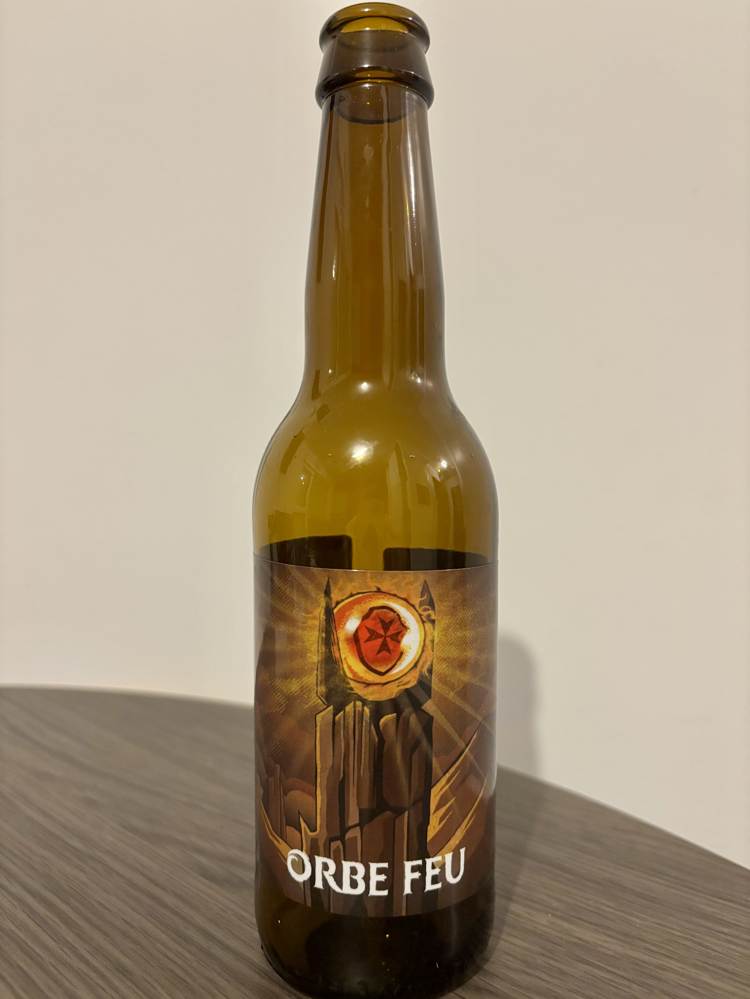
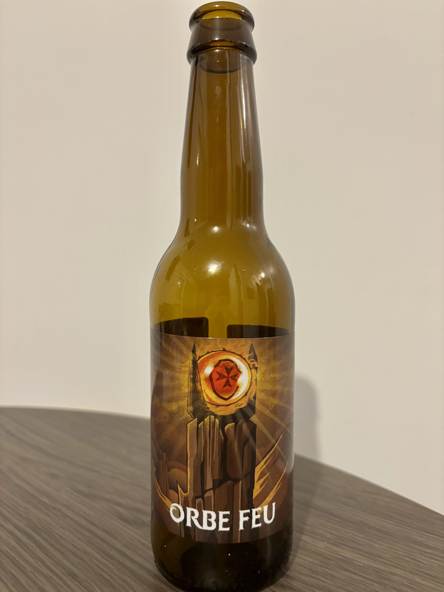

Une histoire captivante
Je trouve que cette trilogie est la meilleure jamais sorti, j'adore tout l'univers autour du fantastique et je colectionne même certains objets tel qu'une carte du monde, tout les livres ou encore une bière avec une illustration. Cette histoire pour moi et pleine de rebondissements et d'action, similaire aux livres, même si il a fallu couper des scènes car trop long. De plus la langue elfique créée est réel, j'avais donc commencé à l'apprendre.
Des personnages inoubliables
Chaque membre de la Communauté apporte différents éléments à l'histoire : courage, humour, sagesse ou tension. J'aime particulièrement la dynamique entre les personnages comme Frodon et Sam, mais mon duo préféré restera toujours Gimli et Legolas qui sont rempli d'humour tout au long des films même dans les moments compliqués.
Une musique magistrale
La bande originale de Howard Shore est absolument magnifique. Les thèmes musicaux accompagnent parfaitement l'évolution de l'histoire. La plupart des musiques mettent en avant les scènes des films, pouvant toucher ou faire rire.
Une immersion totale grâce aux décors
Les paysages de Nouvelle-Zélande servent parfaitement à rendre la Terre du Milieu vivante. Que ce soit les vastes plaines, les forêts ou les montagnes, chaque scène est un régal pour les yeux. Ce souci du détail donne vie à cet univers, ce qui en fait une expérience immersive inégalée.